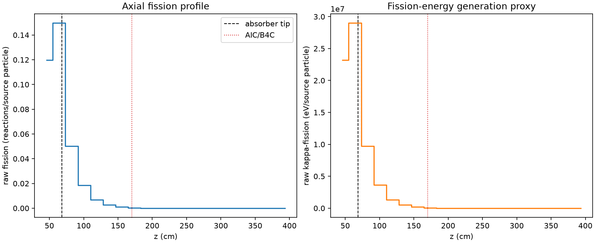
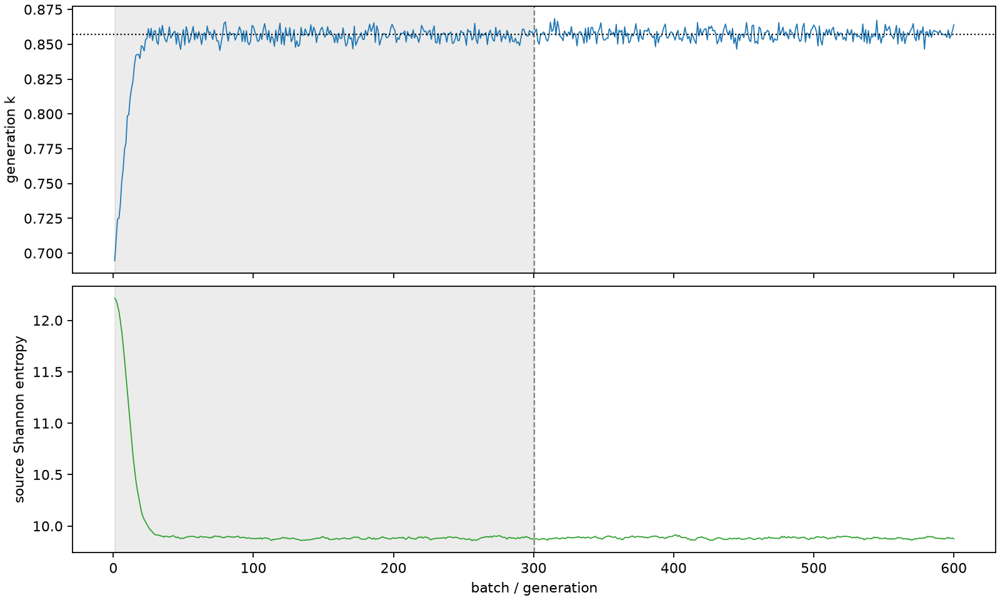

| field | value |
|---|---|
| experiment | V2-STAGE_128_OGRENCI_03-0014 |
| k | 0.8570666324966287 |
| MC standard error | 0.00017077558795895498 |
| seconds | 928.6210670410001 |
| acceptance | not_assessed |
| convergence | review_required |
Completed is output integrity only; physical and statistical review required. Zero tallies do not prove zero production or zero uncertainty.
| diagnostic | value |
|---|---|
| geometric fuel voxels | 5280 |
| zero fission tally voxels | 1700 |
| low signal fuel voxels | 2870 |
| low signal fission share | 0.00014134434483918843 |
| low signal kappa share | 0.0001414063317968283 |
| important fission share | 0.9500884252254025 |
| previous filter included | 2410 |
| duration estimate s | 1562.5173488400023 |
| actual minus estimate s | -633.8962817990023 |
| fission relative MC error | statistics |
|---|---|
| all_geometric_fuel | {"voxels": 5280, "positive_mean_voxels": 3580, "zero_mean_voxels": 1700, "undefined_relative_error_voxels": 1700, "median": 0.04949200282794921, "p95": 0.8946493662156233, "maximum": 1.0000000000000002} |
| low_signal | {"voxels": 2870, "positive_mean_voxels": 1170, "zero_mean_voxels": 1700, "undefined_relative_error_voxels": 1700, "median": 0.4953595545819679, "p95": 1.0, "maximum": 1.0000000000000002} |
| important_95pct | {"voxels": 951, "positive_mean_voxels": 951, "zero_mean_voxels": 0, "undefined_relative_error_voxels": 0, "median": 0.004668939252903316, "p95": 0.010788302403282476, "maximum": 0.011463810040514154} |
| outside_previous_filter | {"voxels": 2870, "positive_mean_voxels": 1170, "zero_mean_voxels": 1700, "undefined_relative_error_voxels": 1700, "median": 0.4953595545819679, "p95": 1.0, "maximum": 1.0000000000000002} |
| kappa_fission relative MC error | statistics |
|---|---|
| all_geometric_fuel | {"voxels": 5280, "positive_mean_voxels": 3580, "zero_mean_voxels": 1700, "undefined_relative_error_voxels": 1700, "median": 0.04940958644465586, "p95": 0.8938608462206382, "maximum": 1.0000000000000002} |
| low_signal | {"voxels": 2870, "positive_mean_voxels": 1170, "zero_mean_voxels": 1700, "undefined_relative_error_voxels": 1700, "median": 0.49416369289234163, "p95": 1.0, "maximum": 1.0000000000000002} |
| important_95pct | {"voxels": 951, "positive_mean_voxels": 951, "zero_mean_voxels": 0, "undefined_relative_error_voxels": 0, "median": 0.0046622233590200065, "p95": 0.010770663717206504, "maximum": 0.01144504783405024} |
| outside_previous_filter | {"voxels": 2870, "positive_mean_voxels": 1170, "zero_mean_voxels": 1700, "undefined_relative_error_voxels": 1700, "median": 0.49416369289234163, "p95": 1.0, "maximum": 1.0000000000000002} |
| axial bin | fission share | kappa-fission share |
|---|---|---|
| 1 | 0.342872265643371 | 0.34284402431491756 |
| 2 | 0.4287176896715431 | 0.42868634937107847 |
| 3 | 0.14353029413974255 | 0.1435673301364546 |
| 4 | 0.053456026478099494 | 0.05347005841545145 |
| 5 | 0.019822870508501136 | 0.019828158186264825 |
| 6 | 0.007442598850537548 | 0.007444596159565391 |
| 7 | 0.0027861205305399913 | 0.002786822524525335 |
| 8 | 0.000934702065359965 | 0.0009350247519088099 |
| 9 | 0.00028465427136589884 | 0.00028478986529228647 |
| 10 | 0.00010170279343830243 | 0.0001017480757555233 |
| 11 | 3.516577651610722e-05 | 3.518037369201583e-05 |
| 12 | 1.1558373334592379e-05 | 1.1565902597061396e-05 |
| 13 | 3.66727011562351e-06 | 3.668612238626954e-06 |
| 14 | 5.453399234657238e-07 | 5.451520456113959e-07 |
| 15 | 1.3828761128908392e-07 | 1.3815821233804128e-07 |
| 16 | 0.0 | 0.0 |
| 17 | 0.0 | 0.0 |
| 18 | 0.0 | 0.0 |
| 19 | 0.0 | 0.0 |
| 20 | 0.0 | 0.0 |
Histories include the inactive-to-active transition at batch 300. kappa-fission approximates fission energy production, not total heat deposition.

